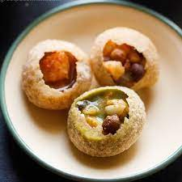

Golgappe

Desciption
Golgappe is a north indian dish that is widely
popular and especially enjoyed during the summer.
It is a small ball made from flour that is hollow from the inside.
It is normally served by stuffing the inside full of a
mashed potatoes and chickpeas stuffing and then dipped in minty and tangy water.
Ingredients
- Flour
- Water
- Vegetable Oil
- Potatoes
- Chickpeas
- Red Onions
- Chilli Powder
- Salt
- Mint
- Corrainder Powder
Steps
- First we make mix water and flour to make dough.
- Dough is then cut into small balls and fried in oil.
- Potatoes are boiled and peeled.
- Chickpeas are also boiled in water until they soften.
- We mix mashed potatoes, crused chickpeas and chopped red onions.
- You can add salt and other spicies to this filling according to your taste.
- Mix various spicies and mint in a couple of litres of water to suit your taste.